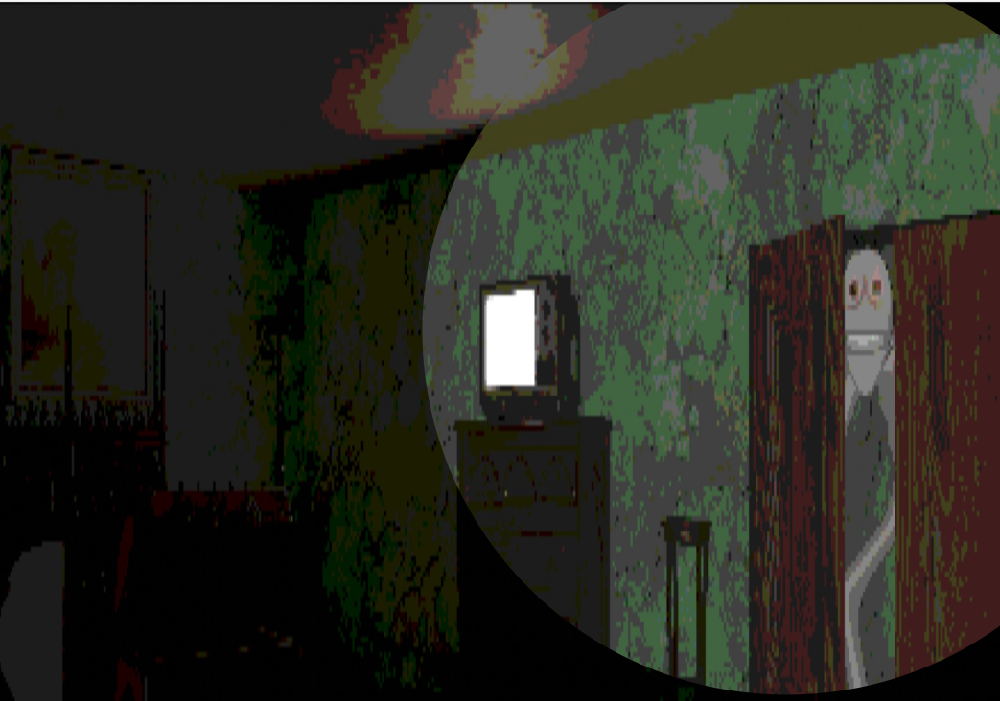
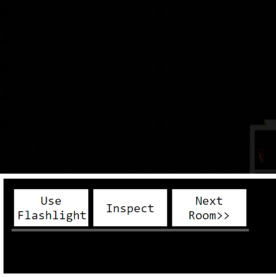
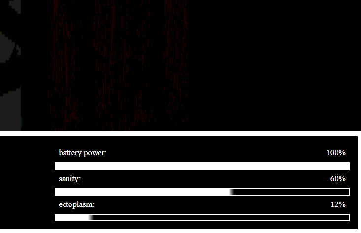

your goal is to explore the house and collect as much ectoplasm as you can. you will need 100% to be allowed to return.

monsters are lurking around the house, they will kill you in seconds if they get the chance. their only weakness is light sensativity, use the flashlight to ward them off.

the buttons on the bottom left are your main control. Inspect the room to collect ectoplasm in any given room. use the flashlight to check the room for monsters. leave the room only when you are sure its safe.

these bars moniter your battery power, which goes down whenever you use the flashlight, your sanity, which you lose overtime and when you leave an unsafe room without using the flashlight, and your ectoplasm, which you need 100% of to escape the house.